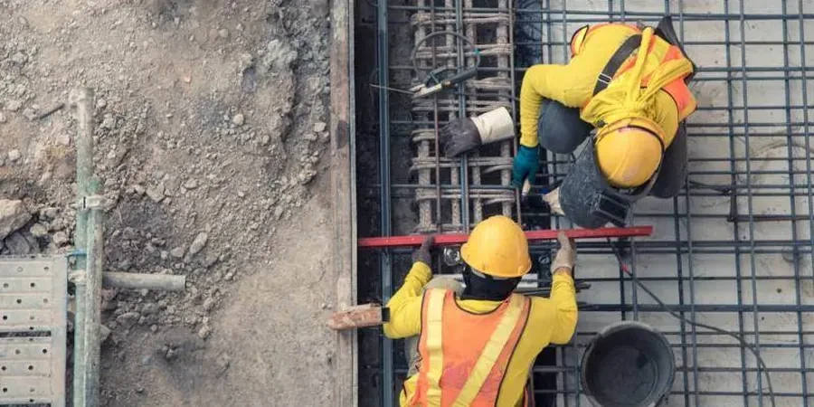

Our Oakland office provides comprehensive geotechnical services tailored to the Bay Area's unique demands. From initial site characterization and subsurface investigations to foundation design and construction monitoring, we deliver integrated solutions that address the region's complex geology. Our team combines consolidated regional experience with rigorous data collection, employing calibrated equipment and code-compliant analysis. We support a wide range of projects, ensuring safety and performance through detailed reporting and practical recommendations. Whether dealing with shallow foundations or deep excavations, our approach integrates seamlessly with local design teams and regulatory expectations, helping you navigate Oakland's subsurface challenges from the ground up. Learn more about our capabilities in shallow foundation design and residual soil characterization.

Methodology and scope
Local considerations
Our firm brings deep local knowledge to every Oakland project, built on years of work in the East Bay. We maintain a calibrated laboratory for site-specific testing and produce code-compliant reports that satisfy both city and county requirements. Our engineers coordinate closely with local contractors, geologists, and authorities like the Alameda County Flood Control District to streamline approvals. We have experience with the Oakland Planning Department's geotechnical review process, ensuring your project meets all regulatory benchmarks without delays. By combining technical rigor with regional familiarity, we deliver reliable, practical solutions for Oakland's varied ground conditions. Our expertise extends to shear wave velocity measurements for seismic site classification, enhancing our hazard assessments.
Explanatory video
Applicable standards
Our work in Oakland adheres to US geotechnical standards, primarily those from ASTM International and ASCE. Subsurface investigations follow ASTM D1586 for standard penetration testing and ASTM D2487 for soil classification. Foundation design references ASCE 7-22 for seismic loads, including site-specific response spectra per Chapter 21. Seismic hazard analyses comply with the California Building Code (CBC) and IBC. Laboratory testing includes ASTM D4318 for Atterberg limits and ASTM D2435 for consolidation. We also follow local guidelines from the Association of Bay Area Governments (ABAG) for seismic risk assessment.
Frequently asked questions
What are the typical soil conditions for residential projects in the Oakland hills?
In the Oakland hills, you often encounter colluvial soils overlying older bedrock formations like the Franciscan Complex. These soils can be loose and prone to erosion, with variable thickness. Shallow groundwater is less common, but slope stability is a primary concern. We typically recommend detailed subsurface exploration including test pits or borings to characterize soil strength and identify any landslide hazards. Our reports provide recommendations for foundation type, drainage, and retaining walls to ensure safe hillside construction.
How does the Hayward Fault affect geotechnical design in Oakland?
The Hayward Fault poses a significant seismic hazard, capable of producing magnitude 7.0 earthquakes. For projects near the fault zone, we conduct fault rupture hazard assessments and site-specific seismic hazard analyses per ASCE 7-22. Ground shaking, liquefaction, and lateral spreading are evaluated. Foundations must be designed for potential ground displacement, often using deep foundations or reinforced mats. Our designs incorporate ductile detailing and compliance with the California Building Code's seismic provisions to enhance resilience.
What permits or approvals are needed for subsurface investigations in Oakland?
In Oakland, you typically need a permit from the Alameda County Environmental Health Department for drilling and soil sampling, especially if groundwater is encountered. The California Department of Conservation's Division of Oil, Gas, and Geothermal Resources may also require notification for deep borings. Additionally, you must comply with local well standards for groundwater monitoring wells. We handle all permitting coordination with local agencies to ensure your investigation proceeds smoothly and legally.
What are common foundation solutions for Oakland's flatlands with high water tables?
In Oakland's flatlands, where shallow groundwater and soft clays are common, we often recommend deep foundations such as driven piles or auger-cast piles to transfer loads to competent strata. Alternatively, mat foundations with drainage systems can be used for lighter structures. Dewatering during excavation is typically required, and we design temporary shoring systems to control groundwater. Our solutions consider long-term settlement and hydrostatic uplift, ensuring stability and performance in these challenging conditions.